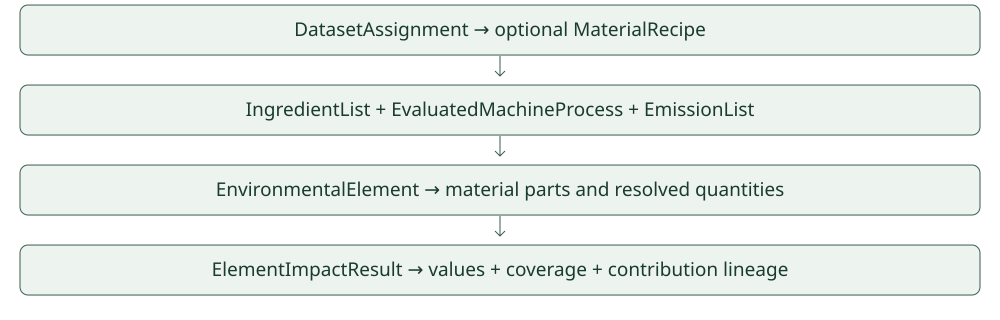

Development documentation · November 2026
System and data model
Architecture

Biomaterial
Machine
Element
Wall
Coverage
Data Model

NetworkProcess and EvaluatedMachineProcess are different contracts. Elementary inventory and pre-characterized supplied factors remain distinct. Matching kg CO₂-eq units alone does not prove method compatibility.